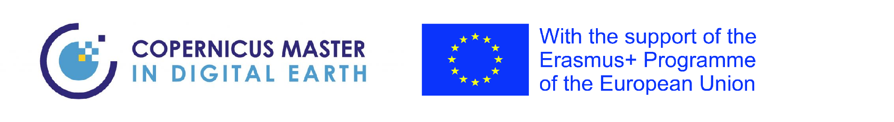

Personal Motivation
- Curios eager to learner
- Great program for professional skill development (summer schools, conferences, internship)
- International environment
- Nature lover

A |
Self-driven, quick starter, passionate Geospatial Data Scientist with a curious mind who enjoys solving a complex and challenging real-world problems.
Objectives
- Continue learning
- Get involved in geo – related research projects
- Improve scientific writing capabilities
- Map generation and data analysis skills
Projects
Project description.
Projects
Project description.
Interests
- Geo- projects
- Integration of remote sensing and in situ measurements
- Learning appropriate ways to communicate and visualize hazards and risks to be relevant for decision-making
- Assemble user friendly maps and data bases
- Integrate extract more information of images (With all types of wavelengths e.g.: optical, radar, lidar, thermal)

Background
Geologist Bachelor's Degree - Universitat de Barcelona Erasmus – Háskóli Íslands
Degree in Geology interested on Remote Sensing techniques.
| EXPERIENCE | EMPLOYER | FUNCTIONS |
|---|---|---|
| JUNIOR INSAR ENGINEER | Sixense Iberia, Dares Technology | Interpretation of InSAR data and optical images in operational projects. SAR Interferometry (PSI) preprocessing and postprocessing. Multi-sensor (Sentinel-1 A/B, ERS/ENVISAT ASAR, TerraSAR-X,Radarsat-2). Reporting of operational projects for customers. |
| REMOTE SENSING GEOLOGIST | Sixense Iberia, GEO3BCN-CSIC / Lítica , Dares Technology, Háskóli Íslands | Optical image processing (Sentinel-2, ASTER, Landsat-8). Mining sector, ore estimation with portable laboratory cameras, images (optic, hyperspectral). Integration optical multispectral data and sampling data gathered on the earth surface. Working with the GPS points position taken on the monitoring of the fissure lava eruption. |
| GEOLOGIST | GeoServei, Litoclean, GEO3BCN-CSIC / Lítica | Hydrogeology and edaphology mapping. GIS consultant. Assistant geotechnical projects. Sampling in the mining sector Assistant in water and soil remediation projects |
Publications
'Machine Learning For Mineral Identification And Ore Estimation From Hyperspectral Imagery In Tin–Tungsten Deposits: Simulation Under Indoor Conditions' 2021 Lobo, A.; Garcia, E.; Barroso, G.; Martí, D.; Fernandez-Turiel, J.-L.; Ibáñez-Insa, J. Machine Learning for Mineral Identification and Ore Estimation from Hyperspectral Imagery in Tin–Tungsten Deposits: Simulation under Indoor Conditions. Remote Sens. 2021, 13, 3258. https://doi.org/10.3390/rs13163258